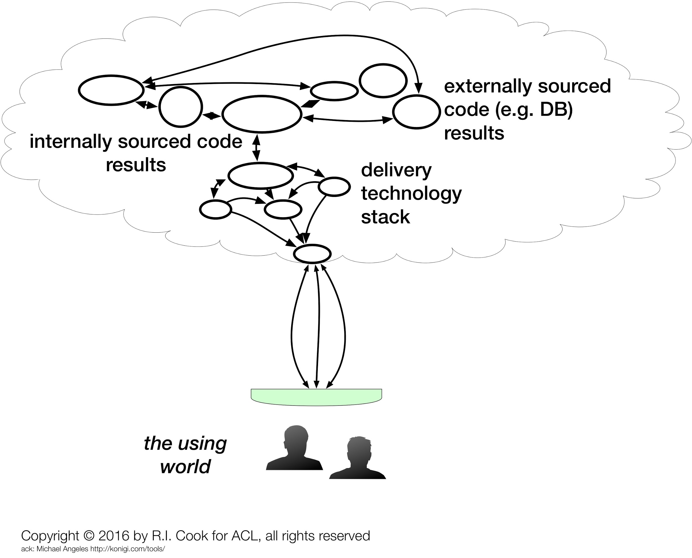
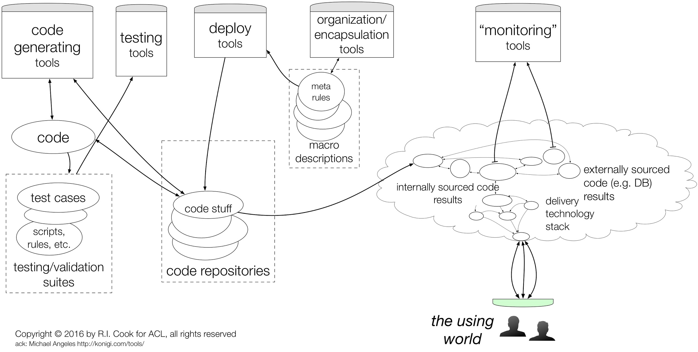
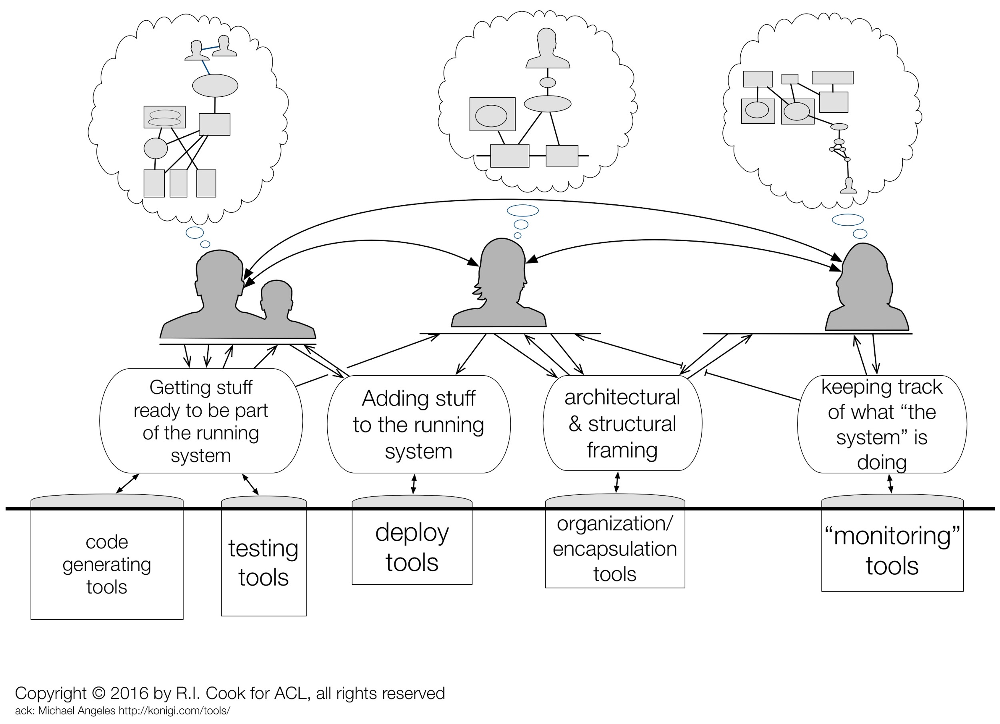
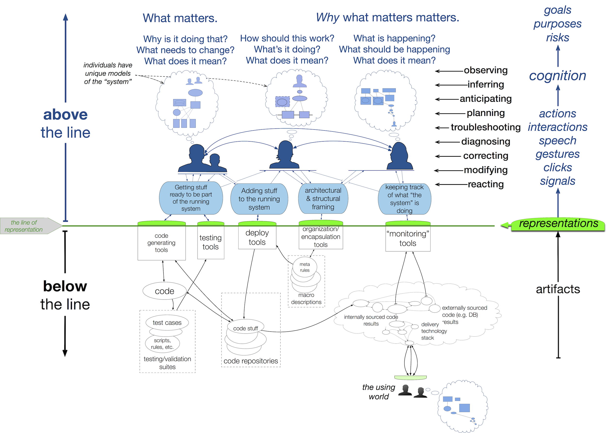

Winter storm STELLA
Woods' Theorem: As the complexity of a system increases, the accuracy of any single agent's own model of that system decreases rapidly.
This document including all tables and figures is copyright © 2017 DD Woods all rights are reserved unless otherwise noted.
1. tl;dr and Executive Summary
1.1 tl;dr
A consortium workshop of high end techs reviewed postmortems to better understand how engineers cope with the complexity of anomalies (SNAFU and SNAFU catching episodes) and how to support them. These cases reveal common themes regarding factors that produce resilient performances. The themes that emerge also highlight opportunities to move forward.
1.2 Executive Summary
Current generation internet-facing technology platforms are complex and prone to brittle failure. Without the continuous effort of engineers to keep them running they would stop working -- many in days, most in weeks, all within a year. These platforms remain alive and functioning because workers are able to detect anomalies, diagnose their sources, remediate their effect, and repair their flaws and do so ceaselessly -- SNAFU Catching. Yet we know little about how they accomplish this vital work and even less about how to support them better in doing it.
During the past year a consortium including Etsy, IBM, IEX, and Ohio State University has explored issues around software engineering as it related to internet-facing business platforms. Technical teams from the consortium partners met for a workshop on coping with complexity. Each team presented a technical summary of a breakdown that occurred in their shop. The other teams commented. The Ohio State team facilitated and summarized emerging themes. Six themes were identified and discussed.
- Capturing the value of anomalies through postmortems
- Blame versus sanction in the aftermath of anomalies
- Controlling the costs of coordination during anomaly response
- Supporting work through improved visualizations
- The strange loop quality of anomalies
- Dark debt
The workshop provides a model for the deep, insightful inquiry that occurs when technical groups collaborate on anomaly analysis. Spin-offs from this effort will focus on building capacity for conducting this work and creating the tooling and processes necessary to assure efficient and effective response to incidents and post-event reviews.
2. Introduction
On March 14 and 15, 2017, the SNAFUcatchers consortium held an informal workshop in New York on Coping With Complexity. About 20 people attended the workshop.
The workshop coincided with a Category 4 winter storm that paralyzed New York and much of the Eastern seaboard. That storm was named STELLA. Although nearly everyone was able to get to New York, participants from out of town were unable to return home following the end of the scheduled meeting. Many stayed an extra night and the workshop was informally continued on March 16. The participants began calling the workshop "STELLA". Hence the title of this report.
The consortium partners have regular experience responding to handle anomalies or SNAFUs, and engage in blameless postmortem process in order to learn from these experiences. Each consortium partner presented a postmortem analysis selected from their experience with SNAFUs. Each anomaly could have led to a service outage, but the response was able to block or limit the cascade of effects before this occurred. These anomalies, the responses to them, and the impressions from their internal postmortem were reviewed and discussed by the group. The following day the participants searched for and characterized common themes about what factors produce resilient performance, using the examples of anomalies and responses as a jumping off point. These themes stimulated discussion about different ways to build resilient performance in business-critical IT to guide further work by the consortium.
This report describes the features of anomalies and responses, and outlines the themes and possible routes for future consortium work to enhance resilient performance.
2.1 About the SNAFUcatchers consortium and the STELLA meeting
The SNAFUcatchers consortium was created as a vehicle to study Resilience Engineering concepts in the domain of business-critical software, and this report represents the first project of the consortium, called “Coping With Complexity.” Coping with complexity has been a 'thing' for at least 30 yrs. Experience with accidents, notably the Three Mile Island nuclear plant accident in 1979, generated intense interest in how the operators of complex systems managed anomalies. Important contributions appeared in papers by Rasmussen and Lind (1981), Woods (1988), and others restated and refined these ideas (e.g. Cook 1998). The decision to name the first SNAFUcatchers project "Coping With Complexity" was a nod to the past and acknowledgement that internet-facing business information technology has become critical infrastructure. The need to understand how people manage to keep these systems operating is underlined by the episodes of service interruption that nearly every company has experienced.
The Ohio State University's Cognitive Systems Engineering Laboratory personnel have engaged the other consortium partners over the past year. The lab members have accumulated weeks of on-site time with the partners, observing work including anomaly responses and postmortems. To facilitate exchange of learning across the partners the consortium planned a meeting at which technical experts from the partners would gather to discuss the issues related to coping with the complexity of developing and running large, network-delivered information services.
The plan for the meeting was to have each consortium partner present a case study consisting of a specific anomaly that had disturbed normal operations and led to a postmortem. Partners were free to choose any anomaly they liked; there were no specific requirements. The presentations were intended to be a springboard for examination of the problems confronting devops groups and the approaches that were being used to manage those problems. There was no list of topics or specific issues identified prior to the meeting and there was no other agenda.
Each consortium partner sent a team of practitioners to the meeting. About 20 people attended the meeting. The participants were seated around a large table with multiple projection screens showing the prepared presentation notes and figures. Several people participated from remote locations using a video conference system.
The first day was devoted to presenting and discussing the anomalies and response. Each team presented their anomaly, the cascade of effects, and the process to resolve the event before any service outages occurred. The teams also described their postmortem process. Recognizing that each team came from a different industry, used different technology, and that the organizations were quite different, the presentations included descriptions of the technical and organizational context in which the anomaly occurred. There was a substantial back-and-forth discussion during the presentations as participants sought details and clarification about "the way you do things at X Corp" and the anomalies themselves.
The teams presenting are experts on their software from a continuous development and operations perspective. Each team’s local perspective overlaps with the other teams presenting cases of SNAFU catching. After each presentation, the group discussed the anomaly and postmortem, compared and contrasted the events, responses, and subsequent postmortems, and related topics. These lively and animated discussions helped all see and reflect on common patterns. In every case the group response to a presentation included "oh, I can see how that could happen" or "that has happened here" reactions.
The OSU participants guided the reflection to connect the patterns in these cases to a wider set of results about cognitive work in anomaly response, resilience, joint activity, and proactive learning without waiting for failures to occur.
The second day of the meeting began with a review of the presentations. The floor was then opened for more general discussion of the themes and topics that attendees considered important, interesting, or confusing. The process of contrasting and shifting perspectives revealed what is otherwise hidden about resilient performances and what is essential to build and sustain the ability to be resilient in the face of surprise in the future. This discussion was wide ranging and touched on many topics that are described further in this report.
2.2 The focus on handling anomalies
The approach to reveal SNAFU catching and anomaly response draws on techniques in Cognitive Systems Engineering including process tracing, knowledge elicitation, and critical incident methods (cf. Flanagan 1954, Shattuck & Woods 1994, Sarter 2006, Klein, G. A., Calderwood, R., & Macgregor, D.,1989). The set of anomalies presented serve as probes to reveal resilience performance and capabilities needed to produce resilient performance. The contrast of events and the multiple perspectives in the discussions helped to reveal general themes about coping with complexity in anomaly response (Woods and Hollnagel, 2006, chapter 8).
The anomalies are rich data sources, each of which had already been probed and analyzed in depth by one team. During presentation and discussion, the other two teams evaluate, assess, and probe using the presenting team as a resource. The participants are experts with relevant experience. They rapidly understand the basic elements of the anomaly and get quickly to the level of detail at which the anomaly is subtle, difficult to manage, and challenging. The language of their discourse is highly technically encoded and would be difficult for non-experts to understand. It is also extremely efficient and focused. While not fluent in this technical language, the OSU team, by virtue of having spent the previous year working with the other teams, was able to engage the discussions and help connect the points to more general issues.
The use of actual anomalies anchors the discussion in important ways. Experts are typically much better at solving problems than at describing accurately how problems are solved. Eliciting expertise usually depends on tracing how experts solve problems. This is the main method of work used by the OSU team in studying expertise. The STELLA meeting used well studied, relevant, demanding anomaly cases successfully handled as stimuli for the elicitation of expertise. The structured inquiry into anomalies is a way of getting at the messy details that so often make work hard (Nemeth et al. 2004).
The research base for analyzing the "Coping With Complexity" project described here is extensive. Its central tenet is the need to fully understand how experts cope with the challenges that arise in running dynamic process environments. All such environments generate new instances of old problems and new types of problems that tax the abilities of the people charged with keeping the processes going. A full understanding of how experts cope with the complexity confronting them is essential to engineering the processes to be more resilient. Doing this often requires some form of process tracing (Woods, 1993). Post-anomaly investigations and formal postmortems rely on process tracing. The nexus of process tracing as a means to understanding coping with complexity is visible in Allspaw's Trade-Offs Under Pressure: Heuristics And Observations Of Teams Resolving Internet Service Outages (2015).
Developing means to establish how people understood what was happening, how they explored the possible sources, how they weighed alternative corrective actions and made sacrifice decisions, how they deployed resources, managed side effects, compensated for deteriorating conditions, revised their problem understandings, and coordinated with others is paramount if we are to enhance the resilience of these important systems.
2.3 The above-the-line/below-the-line framework
The framework for this report is a systems view of internet-facing business information infrastructure.
A typical description of the "system" for this infrastructure is shown in Figure 1. It includes internally-developed code, externally-sourced software and hardware such as databases, routers, load balancers, etc. and is provided as a product or service to customers, both internal and external to the organization.
Figure 1. One view of The System
This mental picture is specific and contextual to the business. It typically has lots of components, and while there might be similarities to the components across organizations (databases, web applications, published and acting APIs, etc.) they all hang together and interact in specific ways that are unique to the business. This view gets a significant amount of attention and focus from software engineers, devops people, network and system admins and others.
Figure 2 - A more systems-oriented view of The System
This view of The System includes tools that teams use, modify, build, maintain, update, and repair (Figure 2). These are instruments and components used by engineers to manipulate the product or service that customers use. The first view of The System (Fig. 1) is entirely contained in this view. Added are deployment tools, confidence building tools (code review, tests, etc.) as well as tools for monitoring, observability, telemetry, alerting, etc. which are used to validate and watch the behavior of the product or service.
Figure 3 - The System includes the makers, modifiers, watchers, and compensators
All working business enterprises rely on people to build, maintain, troubleshoot, and operate the technical components of the system (Figure 3). These people do the cognitive work needed to track the way these artifacts function and how they fail, what is happening and what can happen next, which risks are looming and which are receding, and what changes are coming. All these facets are incorporated into an internal representation that is sometimes called a "mental model" (Woods et al 2010, Chapter 6). Each internal representation is unique -- note that the 'models' in the bubbles above the silhouette heads above are similar in some respects but not identical. Building and keeping current a useful representation takes effort. As the world changes representations may become stale. In a fast changing world, the effort needed to keep up to date can be daunting.
Figure 4 - An inclusive view of The System
Figure 4 shows another, more inclusive view of The System. The people engaged in observing, inferring, anticipating, planning, troubleshooting, diagnosing, correcting, modifying and reacting to what is happening are shown with their individual mental representations. These representations allow the people to do their work -- work that is undertaken in pursuit of particular goals. To understand the implications of their actions requires an understanding of the cognitive tasks they are performing and, in turn, an understanding of what purposes those cognitive tasks serve.
The green line is the line of representation. It is composed of terminal display screens, keyboards, mice, trackpads, and other interfaces. The software and hardware (collectively, the technical artifacts) running below the line cannot be seen or controlled directly. Instead, every interaction crossing the line is mediated by a representation. This is true as well for people in the using world who interact via representations on their computer screens and send keystrokes and mouse movements.
A somewhat startling consequence of this is that what is below the line is inferred from people's mental models of The System (in the Figure 1 sense).
This is not to say that what is below the line is imaginary. But the artifacts there cannot be perceived or manipulated directly. Instead, people use mental models of what, although hidden, they infer must be there to interpret what they see on the screens and to predict what the effect of typing a character or clicking a mouse will be.
This framework may seem awkward. It appears to insert an unwanted intermediary between us and the system that we all "know" is running somewhere inside the computer. Reflection will demonstrate, however, that Figure 4 shows what must be true: what lies below the line is never directly seen or touched but only accessed via representations.
An important consequence of this is that people interacting with the system are critically dependent on their mental models of that system -- models that are sure to be incomplete, buggy (Woods et al. 2010, page 104-5), and quickly become stale. When a technical system surprises us, it is most often because our mental models of that system are flawed.
Two broad challenges arise from Figure 4's representation (!) of The System:
- Individuals in a variety of roles must somehow develop and maintain good enough mental representations of the technical artifacts to be able to comprehend and influence the behavior of those artifacts. In a changing world, their knowledge of what is below the line will go stale.
- Individuals must somehow develop and maintain a good enough understanding of how others understand the artifacts that they can cooperate.
3. Cases
3.1 Catching the Apache SNAFU
A software build process intended to bring up a new single server for testing purposes failed because the version of Apache httpd included in the system repository was incompatible with one of the new applications. Furthermore, the default setting pushed an upgrade across the fleet, instead of an isolated install on the single machine.
The Chef recipe for building a server was modified to force the newest version to be pulled and installed. A regular 10 min Chef update process found this new recipe and began updating the several hundred servers running httpd. These new versions of Apache failed to start, leading to degraded system performance.
The effect was recognized quickly and remedial restarts of httpd were successful, although it took several hours to resolve all the effects of the upgrade. The Chef rollout was staggered at 10 minute intervals to avoid a thundering herd effect. This created additional pressure for the team working to resolve the issue.
The performance was gradually declining because the rollout of the non-working version of Apache was staggered but as time passed there were fewer and fewer servers keeping the site up. The team were confronting the question "how many machines could we lose as we diagnose the issue?"
Post-event review showed that the system was viable during the anomaly because, while a few servers did have automatic Chef update processes, the updating processes themselves were broken, and therefore they continued to run the old version of httpd. Recovery efforts were complicated by loss of system monitoring tools that also depended on Apache.
Package maintenance routines for the system repository, Chef recipes and the Chef system, and the mistaken belief that installing a single server could not have system-wide side effects interacted to produce the anomaly. The irony that the system was able to 'limp along' on a handful of servers that continued to run because they were not 'properly' configured was not lost on the operators.
3.2 Catching the Travis CI SNAFU
A distributed continuous integration (CI) service, Travis CI Enterprise, used daily by hundreds of teams in the company to build and test projects bogged down and became unresponsive. Several sources of this behavior were considered and evaluated.
Eventually the investigations revealed that the asynchronous (RabbitMQ) message server was failing. The failure triggered an alert that multiple build worker nodes were unable to handle build jobs. The team began investigating the issue by looking at the cloud console for stale or terminated worker instances. A few were found and deleted but the performance issues continued.
Eventually the troubleshooting group killed all the running virtual machine instances and containers. The CI service was restarted. The system then appeared to be stable with nominal performance. Examination of the CI service logs suggested that worker container processes were being killed. Increasing the quota regulating the number of concurrent workers did not resolve the performance issue.
Users reported that builds were not restarting. At this point the team noticed that the queue in the Travis CI messaging system for build restarts was growing rapidly. Travis CI was restarted which seemed to solve the issue. Shortly after, a second alert triggered for the same initial problem (workers not working). The same steps were taken (killing builders and workers in GCE and it improved the situation but did not solve it.
It was then noticed that RabbitMQ had errors in the Travis CI worker process logs as well as unusual behavior in other Travis CI internal queues. Concurrently, the team noticed that the Database-as-a-Service provider which hosts their RabbitMQ service had had a capacity-related service incident in the same datacenter where their RabbitMQ service was hosted. The console showed that the RabbitMQ instance was healthy and the team attempted to confirm this with the Database-as-a-Service provider, and they were assured the problems were not with the database or messenger service. Convinced this was the source of their issues, the team began planning to migrate to a new instance of RabbitMQ. Ordinarily, the team accomplishes such configuration changes using Travis CI. In this case, the team used a previously designated fall-back mechanism to make the change since Travis CI was not functional.
This migration was successful and after processing backlogged queues the system began running as expected. A support ticket had been opened with the Database-as-a-Service provider but the team failed to receive any feedback to aid their diagnostics or recovery.
3.3 Catching the Logstash SNAFU
Startup of a normally reliable multiple server system was exceptionally slow and even simple terminal commands (e.g. ls) entered on the primary host took minutes to complete. Diagnostic exploration of the primary server did not reveal unusual behaviors in that server or in the other servers. The internal network appeared to be operating normally. That network was reconfigured to permit starting the system via a backup server. Initially the poor performance problem appeared to be resolved but the backup too began to slow.
Contingency plans for a major outage were started. Further examination of the primary server showed that a downstream ELK stack's Logstash program was behaving erratically and only occasionally able to process messages from the primary server. This lead to the primary server's kernel TCP/IP buffer to fill, causing back pressure on the primary system and causing the system logging facility to stutter.
This communication issue would not normally have had the impact it did except for the fact that the primary server also had the ‘snoopy’ keylogger application installed. The ‘snoopy’ keylogger was in place to capture operator’s commands in order to 1) produce a high-resolution audit trail to be used for compliance purposes, and 2) provide timeline data that can be reviewed during post-incident reviews.
This meant that every command executed on the server would hang as it was intercepted by snoopy who then attempted to write to syslog. Snoopy would cause the command to hang until a timeout threshold was reached and the syslog write attempt was aborted.
Killing Logstash relieved the communications pressure and allowed the primary server to complete the system startup. The possibility of a downstream source of system 'constipation' was not considered until late in the anomaly response.
3.4 Observations on the cases
The cases are from businesses whose primary activity is providing information processing services. These businesses normally interact with customers exclusively via their 'sites' via network. Other than using the internet for service delivery, the businesses and services they supply have little in common; the computer languages, supporting applications, organization, and even regulatory environments are dissimilar.
Despite these differences, the anomalies and the reactions to them do have common features.
3.4.1 Features of the anomalies
- The anomalies are examples of complex systems failures (Cook,1998).
- Each anomaly arose from unanticipated, unappreciated interactions between system components.
- There was no 'root' cause. Instead, the anomalies arose from multiple latent factors that combined to generate a vulnerability.
- The vulnerabilities themselves were present for weeks or months before they played a part in the evolution of an anomaly.
- The events involved both external software/hardware (e.g. a server or piece of application from a vendor) and on locally-developed, maintained, and configured software (e.g. programs developed 'in-house', automation scripts, configuration files).
- The vulnerabilities were activated by specific events, conditions, or situations.
- The activators were minor events, near-nominal operating conditions, or only slightly off-normal situations.
- The anomaly consequences cascaded over time.
- The consequences propagated across technical components and outwards to have direct and indirect impacts on customers and reverberating effects on the system owners. The result is a 'pile on' effect in which the gravity of the anomaly increases and the difficulty of unwinding its consequences becomes greater.
- Some buffering of the anomaly consequences was provided by the technical components (e.g. queues, recruitable resources, and failover mechanisms).
- These buffering mechanisms are normally capable of handling the distributed system's functional variation.
- The anomalies exhausted those mechanisms.
- The people involved also took action to buffer the anomaly consequences.
- These actions sometimes preceded the saturation of the technical components buffering capacity.
3.4.2 Features of the anomaly responses
Participants often said things like "oh, we have that too" or "that has happened to us." Common features include:
- surprise
- uncertainty
- the role of search
- the role of system representations
- generate hypotheses
- use of basic tools
- coordinating work and action
- communications in joint activity
- shared artifacts
- the consequences of escalating consequences and disturbance management
- managing risk
- goal sacrifice
These features are discussed in more detail below.
Surprise
In all cases, the participants experienced surprise. Although anomalies are relatively common for all groups, each case had specific surprising features. These were mainly discoveries of previously unappreciated dependencies that generated the anomaly or obstructed its resolution or both. The fact that experts can be surprised in this way is evidence of systemic complexity and also of operational variety.
A common experience was "I didn't know that it worked this way." People are surprised when they find out that their own mental model of The System (in the Figure 1 or Figure 2 sense) doesn't match the behavior of the system.
More rarely a surprise produces astonishment, a sense that the world has changed or is unrecognizable in an important way. This is sometimes called fundamental surprise (Lanir, 1983; Woods et al., 2010, pp 215-219). Bob Wears four characteristics of fundamental surprise that make it different from situational surprise (Wears, R. L., & Webb, L. K., 2011):
- situational surprise is compatible with previous beliefs about ‘how things work’; fundamental surprise refutes basic beliefs;
- it is possible to anticipate situational surprise; fundamental surprise cannot be anticipated;
- situational surprise can be averted by tuning warning systems; fundamental surprise challenges models that produced success in the past;
- learning from situational surprise closes quickly; learning from fundamental surprise requires model revision and changes that reverberate.
Information technology anomalies are frequently fundamental surprises. This is due to the difficulty in maintaining adequate mental models of what is below the line, understanding how this connects to what is above the line -- crossing the line, as software systems grow in complexity and continuously change.
This adjustment of the understanding of what the system was and how it worked was important to both immediate anomaly management and how post-anomaly system repairs add to the ongoing processes of change.
Uncertainty
Uncertainty is closely linked to surprise. Sorting out the uncertainty that attends a SNAFU is an important cognitive task for people responsible for the technological artifacts.
At the earliest stage the details of a SNAFU are unknown and the range of possibilities is large.
First indications of a SNAFU are often uninformative about its significance. A SNAFU may be a minor event or herald a devastating loss or something in between (Klein et al. 2005).
It is commonly not immediately clear what response is required. Some SNAFUs will resolve themselves (e.g. brief network traffic bursts), some will require immediate intervention (e.g. restart of a process), while others will need to be addressed in complicated ways (e.g. deploying new code).
It can be hard to tell if there is actually a SNAFU occurring. Large IT systems have complex behaviors and substantial moment-to-moment variability. Instantaneous performance changes may or may not indicate that some problem is occurring but almost always worth examining, recording, or discussing.1
Failure to distinguish between a SNAFU-in-progress and ordinary variability and discrepancies can lead to missing opportunities to intervene in the evolution of a critical event or, alternately, lead to wasting of valuable time and attention on what is essentially noise.
The role of search
Developing an understanding of the anomaly required participants to search for information about the system and its function. Evidence for these searches is found in the command sequences and dialog (including some detailed chat records) that occurred during the response. The participants were engaged in a particularly complicated form of search: exploring the external world based on their internal representations of that world, available affordances, and multiple, interacting goals. In every case the search was effortful and iterative. Neither the sources of the anomaly nor the route to correction were immediately apprehended.
The control and modulation of such complex searches is presently not understood but it is clear from other studies that there is intense, meaningful interaction between the progression of the anomaly, available (and potentially available) information, and the quality of collaboration across multiple cognitive agents (Watts-Perotti, & Woods, 2009).
Evolving system representations
In each case we can infer that the practitioners used internal models of the technical system to direct their search, interpret results, and plan further investigations and corrections. Mental models are representations of some part of the external world -- in this case a complicated computer system and the factors acting on it. The experts' ability to manage the anomaly was heavily dependent on the quality of their system representation and its use to derive possible sources and routes for the anomaly as observed.
The complexity of the technical artifacts precludes a comprehensive understanding of the system [see Woods' theorem]. Instead, experts demonstrated their ability to use their incomplete, fragmented models of the system as starting points for exploration and to quickly revise and expand their models during the anomaly response in order to understand the anomaly and develop and assess possible solutions.
Generating hypotheses
Process tracing (Woods, 1993) of parts of the anomaly responses yielded protocols indicating that participants formed, tested, and abandoned multiple hypotheses during their exploration of the anomaly and search for its sources. This work was quite fast and efficient; participants were quick to seek and use information, especially in the early stages of the response when the nature, extent, and severity of the anomaly was unknown. The earliest activities, however, did not appear to be hypothesis-driven but instead focused on hypothesis generation (Woods and Hollnagel 2006). These efforts were sweeping looks across the environment looking for cues. This behavior is consistent with recognition primed decision making (RPD; Klein, 1993) and explicit in Allspaw (2015).
Basic tools
Although automation (e.g. Chef, Travis CI) and sophisticated monitoring (e.g. Nagios, ELK) are integral in their technical systems, practitioners use basic tools for assessment and modification during anomalies.
Command line tools entered from the terminal prompt are heavily used. These commands are a lingua franca among practitioners. Although automation and monitoring provide convenient and efficient ways of doing things and keeping track of nominal performance, when things are broken or confusing or when decisive actions are taken, tools that provide tight interaction with the operating system are commonly used. The command line tools allow -- for want of a better word -- primal interaction with the platform. The automation and monitoring applications are treated, by comparison, as being indirect or even opaque.
Self-generated records ("logs") were used extensively both for post-anomaly reconstruction and in real time for anomaly response.
By their nature, logs are sequential, documentary accounts of processes and conditions within the system. The sequential character is crucial to the use of logs; much of the reasoning about the system is causal inference about influences and pre-conditions.
Logs can be so voluminous that human processing of them is difficult; much effort has been expended on developing programs to analyze logs. [Writing programs to analyze the output of other programs is a way of managing this data overload.] But in virtually all cases, those struggling to cope with complex failures searched through the logs and analyzed prior system behaviors using them directly via a terminal window.
Coordination
Each anomaly response involved joint activity coordinating their efforts to understand the events underway and synchronizing their activities to mitigate and resolve the anomalies (Klein, Feltovich, et al., 2005); (Woods and Hollnagel, 2006).
The detailed traces show that investigating and repairing sometimes proceeded in parallel along different avenues, sometimes was distinctly cooperative and in tandem, and sometimes diverged widely in purpose and direction.
Coordinating these different threads of work demanded attention and effort beyond that directed towards the anomaly per se.
The number of people involved in the anomaly response started out small, with one or two people, but quickly rose as the existence and significance of the anomaly was appreciated. In some cases, the initial responders recruited other experts to help in assessing the situation. In others, experts noticed the anomaly or observed the response activities and joined the response process on their own initiative.
We identified little explicit coordination of experts responding to the anomaly. Instead, coordination was largely implicit with individuals taking on roles, performing actions, and contributing questions, information, or observations to the ongoing process. The technical leaders emerged quickly.
The participants noted that those not directly involved in the response we careful to avoid interrupting those engaged in the anomaly response. For example, although the physical workspace and IRC channels were open and accessible, co-workers stayed away from the responders’ workstations and did not interact with them via IRC during an escalating outage. The participants also noted that demands for status updates, extraneous requests, and work required to bring newly joined persons "up to speed" have made other anomaly responses difficult.
This coordination effort is among the most interesting and potentially important aspects of the anomaly response.
Participants in an incident were sometimes outside the immediate sphere of those taking action. They may be data gathering for the purposes of disseminating information that direct participants are unable to share as a means of reducing context switching while attempting to resolve the issue.
In some cases, spectators made themselves available to handle potential future incidents since normal staffing was absorbed in the current anomaly.
Communications in joint activity
Communication among the multiple people and roles engaged in the event was prominent in all the cases.
- Chat: all groups used some form of chat application (IRC, Slack, Pidgin, Hipchat, etc.) during the anomaly response.
- In some cases, chat allowed communication with remote locations, but it was also used -- to varying degrees -- by people in the same location.
- Messages appeared on more than one chat channel during the response. Initial exchanges appeared on technical or operational channels. Later, other channels (management, organizational coordination, and internal broadcast) were used for internal notification and updating.
- In one case the chat system itself failed during the anomaly response. The participants then used telephone (both conference line and person-to-person) contact to replace some of the chat functionality.
- Although all groups have one or more chat 'bots', no one reported that bots contributed to or interfered with chat communications.
- Because chat exchanges are preserved and recoverable, records of chat were especially useful in reconstructing the anomaly response for subsequent investigation and for postmortems.
- Face-to-face verbal communication: all groups reported that face-to-face verbal exchanges were part of the anomaly response. Most groups have shared workspaces where workers can speak to each other. In contrast with chat, these exchanges are not routinely recorded.
- Non-verbal communication: shared workspaces promote observation of activities by others including managers and those affected by the anomaly. In one case this contributed to the anomaly response by reducing the need for explicit communications about the anomaly. One participant commented that, during the event, "they could see we were busy and they kind of stood back and let us have room to work".
- Information about the event was communicated internally and externally by people assigned to that task. This alerting or updating activity is considered part of anomaly response by all the groups. The format, frequency, and detail in this updating varied but the activity had a common goal: Letting users of the system know that an anomaly was in progress and that it was being actively managed. Some organizations had detailed, formal process plans for these communications.
Shared artifacts
Most anomaly response takes place via individual display screens, although common workspace promotes locally shared viewing of screens. There are few public artifacts in these workspaces. When present, these are usually graphic displays of coarse-grained system activity.
The increasing popularity of distributed operations for 24/7 available systems as well as work-from-home may have reduced the value of (as well as investment in) traditional shared artifacts, eg. whiteboards, while increasing the value of new sharing methods (see Communications above). In some cases, the metrics dashboards which internal teams use to monitor system health are also shared externally with end users.
The consequences of escalating consequences
Generally, the longer a disruption lasts, the more damage is done. Disturbances propagate and cascade; consequences grow. Even when the initiating event is a full-fledged outage, the weight of that event increases as subsidiary and related processes react or fail to react. (The air travel disruptions from IT outages are convenient examples.) Knowing this, organizations have in place plans for managing the likely or foreseeable consequences of SNAFUs. For minor SNAFUs these plans include methods for bringing resources to bear, notification chains to alert more senior managers and customer relations people, etc. At the other extreme are business continuity plans for use eg. after environmental disasters. The extent, scope, and level of detail varies across organizations.2
IT specialists responding to a disruption try to restore functionality as quickly as possible in order to limit the damage. Their attention is focused on understanding the disruption and devising and enacting countermeasures. There is pressure to restore the IT function quickly.
There is also pressure to gauge the scope of the SNAFU, its likely and possible trajectories, and the risks associated with countermeasures that might be employed. Significantly, the people best able to make such assessments are necessarily the ones trying to understand the anomaly.
Although they are linked, these two activities can come into conflict. If the specialists are allowed to work without being asked for updates and projections, their efforts can be concentrated on understanding and fixing the broken system but the rest of the organization is then hamstrung by the lack of information about how the problem-solving process is proceeding. On the other hand, if the specialists are constantly being dunned for explanations and estimates of the time to repair they are likely to make little progress on understanding the anomaly, devising countermeasures, etc.
The postmortem discussions revealed that organizations seek ways to avoid burdening their technical staff with demands for updates and projections, especially in the early stages of anomaly response. For example, the postmortem descriptions included comments such as "[the managers] could see we were busy and stayed away from our workstations".
In highly regulated settings the plans for dealing with anomalies sometimes have quite sharp thresholds or 'edges' where new requirements come into play. Here the technical staff may experience strong pressure to make declarations about the nature of anomalies even though they do not fully understand what is happening or what it will take to resume 'normal' operations. Uncertainty and escalating consequences combine to turn the operational setting into a pressure cooker and workshop participants agreed that such situations are stressful in ways that can promote significant risk taking.
Process control studies, notably of nuclear power plant operations, show that, at some point in the evolution of an anomaly, escalating consequences can shift the main focus of work away from trying to understand and fix the problem towards trying to alleviate its consequences. Woods has called this the "shift to disturbance management" (Woods & Hollnagel, 2006; Woods, 1994). For 24/7 operations this might mean taking some dramatic action such as moving operations to a backup facility. Such decisions usually have formalized organizational definitions (e.g. "declaring" a disaster). They are highly charged and entail exceptional commitments and risks. Because these situations are so rare and involve transfers during a disruption their success is not assured. The degree of commitment involved may make retreat from the decision practically impossible -- there may be no way to recover if the transfer is unsuccessful, making the decision an 'all in' commitment.
Although they are not usually charged with making such dramatic decisions, IT staffs understand how passing time and escalating consequences may lead to decisions that eliminate their own capacity to resolve the SNAFU and this creates enormous pressure to gain resolution quickly. It seems likely that what are later regarded as unwise decisions by IT staff are actually efforts to forestall the escalation of consequences to the point where the shift to disturbance management will occur. One rationale for improving the quality of postmortems is to obtain better insight into the way that escalating consequences increase the pressure on IT staff and how to better inform their approach to these difficult situations.
Managing risk
Correcting the technical problem almost always requires specific actions and these actions entail exposure to risk. Entering console commands, restarting services, making changes to and deploying code, altering network settings, and the myriad other changes that may be required to address the outage all present some risk.
The workshop presentations described the workers' concern for the risk they were accepting by making changes to the working system. They explicitly assessed the risk associated with different approaches and sought ways to test potential solutions. They recognized that what seemed to be a fix for one problem might generate additional problems. Their sense of jeopardy increased with uncertainty about the source of the problem; the risk of taking action was judged much greater when the cause of the disruption was unknown or speculative.
Goal sacrifice
In each case the practitioners involved were called on to sacrifice one or more goals in order to achieve some other goal. Sacrificing lower level goals for higher level ones is a common theme in managing process control situations (Allspaw, 2015). Under 'normal' operating conditions many goals can be active simultaneously and the workers need to do little to maintain a balance between competing or mutually exclusive goals.
During disturbances, however, achieving important ("high level") goals may require abandoning less important ("low level") ones. This sacrifice decision can be controversial if the lower level goal is, e.g., keeping operational costs down. Sometimes the sacrifice requires incurring damage, even severe damage, in order to prevent an even greater catastrophe.3
Two things stand out. First, although organizations often purport to have shared values and common goals, sacrifice is always difficult. Sacrifices typically take place under high pressure and uncertainty when the available data is sparse or conflicted. Second, sacrifice decisions are readily criticized afterwards and, this is ironically the case, especially when they are successful. A sacrifice that preserves some desired goal at a high cost may be characterized as a failed decision because that bad outcome did not occur. Thus, a decision not to open for business because the technical system is not proven to be in the correct state sets up a potential criticism argument that the decider was being too cautious and that the loss experienced was needless.
3.5 Observations on the postmortem process
All the participating firms have established processes for after-event reviews. In keeping with the current rubric, their term for these is postmortem. How the postmortem is prepared and conducted varies. Some of the common features of postmortem processes were identified in the workshop. A summary of these follows.
Preparation for postmortem is usually the responsibility of one or two people with experience in conducting postmortems. They gather machine generated logs and available chat histories and interview key participants. Depending on the nature of the event they may develop a simple or elaborate presentation for the postmortem meeting which is held a few days or few weeks after the event. The postmortem itself is a meeting that lasts about an hour. The facilitators present the event and a skeletal timeline using a video projector and presentation software such as PowerPoint. Attendees are invited to speak and they fill in technical details, sequential actions, and "what were we thinking about" comments.
The number of people involved in the postmortem varies widely, ranging from about 5 to over 50. Smaller sessions are attended mostly by technical staff but larger ones include people affected by the event or with specific concerns, e.g. managers, administrators, and non-IT workers. The meeting sometimes generates specific action items related to the event.
The postmortems are prosaic to the point of being narrow. They concentrate on technical details and establishing the evolution of the event from its onset through the immediate recovery. Little attention is given to contributors other than the existing code and architecture. Inquiry into broader issues such as the contribution of management structures, production pressures, staffing levels, the pace of development and deployment, and distribution of resources is exceptional.
The conduct of postmortems varies widely, even within a single firm. More significant events are handled differently than less significant ones: more time is devoted to the preparation, more control is exercised over the initial presentation, and the tenor of the discussion is more restrained and can even be restricted. postmortems for events that produce large economic losses or engage regulatory bodies are more scripted, sometimes to the point of being little more than staged events at which carefully vetted statements are made and discussion of certain topics is deliberately avoided. The implications of this observation are discussed more fully in part 4 (Themes).
Postmortems use language similar to that found in other after-accident investigations: "root cause", "contributor", "defense", "trigger", etc. None of the postmortem processes employed formal investigative tools, e.g. fishbone diagrams, probabilistic risk assessment.
In most cases the postmortem findings are recorded as text or hypertext documents that are labeled, indexed, and categorized for future reference. The preparation of these is the responsibility of the facilitators.
There is some pressure to derive specific action items and assign these to individuals or groups. Facilitators commented that this pressure sometimes leads to abbreviated presentations of the timeline and limits the analysis. One firm has divided the postmortem into two meetings, separated by about 10 days, with the first meeting devoted to timeline and analysis and the second reserved for identifying, discussing, and deciding on corrective actions.
Commonly, the action items are transferred to a 'to do' list that may be reviewed later.4 Access to the description of the event, the postmortem discussion notes, and the action item list is typically considered private to some subset of the people involved and high management although wider distribution is sometimes available.
Postmortems may be collected and preserved. Access to these collections is sometimes narrowly limited, sometimes quite broad. The collection itself is sometimes described as 'the morgue', a term consistent with the medical term 'postmortem' and also an old newspaper term for the collection of prior publications organized by topic.
4. Themes
The workshop presentations and discussions expanded around related and interlocking themes. Among these are postmortems, blame and sanctions, controlling the costs of coordination, visualization during anomaly management, strange loops, and dark debt. Using the cases as a starting point, these are described in more detail below.
4.1 Capturing the value of anomalies through postmortems
Anomalies are unambiguous but highly encoded messages about how systems really work. Postmortems represent an attempt to decode the messages and share them. Patterns in the message content, in the frequency and timing of the messages, and in the general themes that the messages touch upon are information about the system that cannot be obtained by other methods. Complexity and change -- the two are closely linked -- make it impossible to maintain a complete and accurate understanding of the system. Anomalies are indications of the places where the understanding is both weak and important. Anomalies are a class of untyped pointers to deficiencies in our understanding that matter. We can, if we choose to do so, if we have sufficient skill in decoding, use those pointers to identify regions worthy of study. Doing this is not simple nor is it always obviously rewarding. But with diligent practice it is possible.
Some of what we know about postmortems comes from the study of reactions to failure in other domains. Results from those studies are consistent with what we know about postmortems in IT settings and this applies to both the opportunities and challenges that come when trying to build competence and consistency in the approach to postmortems.
As in other domains, postmortems are private or semi-private events intended to identify and capture important factors and features associated with anomalies. The basic premise is that postmortems promote learning from (bad) experiences so that (1) such experiences can be made less likely if their sources are eliminated or reduced and that (2) the ability to manage such experiences can be made better if responses to them are better prepared for, e.g. by technical means, better training. The fact that Allspaw and others use the term in IT settings is the result of recognition of a similarity with the processes used in medical settings and a deliberate attempt to evoke the conditions and assumptions that apply there.
One participant observed: "We see repeatedly that postmortems generate I-didn't-know-that-the-system- worked-that-way experiences." Conducting postmortems informs and recalibrates people's models of the how the system works, their understandings of how it is vulnerable, and what opportunities are available for exploitation. "Collectively, our skill isn’t in having a good model of how the system works, our skill is in being able to update our model efficiently and appropriately."5
It is clear from study of after-event reviews that postmortems serve multiple purposes and engage multiple interests. Although they are often characterized as narrowly technical in nature, postmortems are deeply social events that have important functions in the organization. They are conducted in ritual fashion and, like other rituals, engage communities in particular ways, assert authority, and represent status. We will first examine some of the technical aspects of postmortems and then suggest how their social value and meaning are established and managed within the organizational context.
4.1.1. Technical issues in postmortems:
Postmortems can point out unrecognized dependencies, mismatches between capacity and demand, mis-calibrations about how components will work together, and the brittleness of technical and organizational processes. They can also lead to deeper insights into the technical, organizational, economic, and even political factors that promote those conditions. Postmortems bring together and focus significant expertise on a specific problem for a short period. People attending them learn about the way that their systems work and don't work. Postmortems do not, in and of themselves, make change happen; instead, they direct a group’s attention to areas of concern that they might not otherwise pay attention to. Interestingly, the presence and nature of postmortems serves as a signal about the health and focus of the organization and technical artifacts themselves.
Postmortems are not magic. They can be done well. They can also be done badly.6 They can fail to identify the important underlying factors, misdirect attention away from sensitive topics, reinforce organizational boundaries, and undermine efforts to improve. At their worst, postmortems can be reduced to nothing more than formal, perfunctory performances that give the organization a thin patina that deflects criticism and preserves the status quo.
There is no consensus about what makes postmortems work or even what approaches are most likely to lead to success. The presence of skilled facilitators -- most often people with technical chops who have devoted time and effort to learn how to manage these meeting and have practiced doing so -- certainly contributes to success.
The story of an anomaly is often complicated and it is almost always necessary to compress the narrative of the event in order to allow enough time for comments and exploration by the attendees. It can be hard to enumerate all the pathways that were explored and all the choices that were considered. This compression cannot be made lossless but it can preserve the more important signals present in the story. Commonly the timeline contains more detail than the discussion addresses and it offers opportunities for the participants to draw attention to specifics that were not included in the initial presentation. The timeline figures or tables often become iconic representations of the event.
There is some risk that the discussion at a well-attended postmortem will be dominated by a few speakers or will become a narrowly focused on unproductive debate. Conversely, there is sometimes hesitation to participate, especially when the underlying issues are obvious but intractable, or because of fear of reprisal. Expert facilitators are especially helpful in these situations by redirecting attention to productive, learning-focused themes.
Management buy-in is important. Even so, the workshop participants were unanimous that postmortems are essential contributors to their work and produce technical and organizational improvement. There was also agreement that preparation for and conduct of postmortems requires significant effort and that there are few useful tools to aid those preparing and presenting postmortems, let alone those attempting to catalog and make available their results.
Participants expressed interest in making postmortems better, more insight-generating, more easily accomplished, and more effective in improving their organizational and technical environment. They also noted pressures to reduce the resources needed for postmortems and increase their 'value' to the organization. The pressure to identify and maximize 'value' leads to efforts to reduce investment in postmortems.
4.1.2. Social issues in postmortems:
Because they involve detailed examination of events, the circumstances that produced them, and the responses to them, postmortems may bring sensitive, contentious, and organizationally dangerous issues out in the open. Postmortems can reveal dysfunctions, poor performance, mixed messages, conflicts between stated intentions and incentives, etc.
Although apparently technically focused, postmortems are inherently social events. Especially for events with significant consequences, there are incentives to direct attention towards some issues and away from others. When large losses incur attention of senior management the tenor and content of the postmortem may shift away from freewheeling discourse to a more closed ended, narrowly technical discussion. Postmortems may become “stage plays” intended to assert organizational control, ratify management decisions, or localize and truncate the inquiry into circumstances and contributors. In most cases, these shifts are obvious to the more technically sophisticated staff. Repeated experience with these manipulations can generate secondary learning from events, i.e. learning that the organizational imperative is to maintain face, to stave off inquiry into sensitive topics, and to avoid entanglement with powerful outside entities.
Postmortems sometimes serve as demonstrations of due diligence. Such demonstrations may be used to ward off outside attention and intervention. Difficult (or dangerous) issues within the organization are often not addressed or addressed by encoding social features as technical ones. This is particularly true for efforts to produce social control when the organization is in turmoil or disintegrating. The resort to constructing policies and procedures is sometimes evidence of this.
There have been many expressions of interest in the social and psychological effects of post-anomaly reviews. Much of this interest revolves around avoiding 'blaming' the technical workers closely associated with the anomaly. Facilitators acknowledge that their role is to deflect criticism of individual performances and concentrate attention on technical contributors. Ironically, there is much less written about the technical aspects of post-anomaly investigation than about the need to avoid "blame and shame" for individuals. This is one indication of how fraught the post-accident setting is.
How does the learning from postmortems get spread across the organization? In almost all settings that we know of, postmortem processes are isolated and events are handled one-at-a-time and independently of others. There is little opportunity for review of other postmortems and reflection about the patterns across multiple postmortems are distinctly rare. Some firms have libraries of postmortems but there appear to be few people who have library cards and even fewer prone to check out a volume and peruse it. In some settings, this leads to large collections of inert knowledge. One person quipped that the library of incidents is a write-only memory.
A related problem is the way that the learning from postmortems is shared or not shared beyond the postmortem meeting itself. Learning is truncated at organizational boundaries -- at the departmental, divisional, corporate, and enterprise boundary the postmortem results become progressively more opaque and less useful. At the extreme, the publicly available reports about events are pale and stale when compared to what we understand to the many issues, problems, decisions, and tradeoffs that led to those events. Whether this is an essential feature of organizations is unclear but it is prominent wherever we look. Is it possible to pool these experiences and the results of deep, incisive examination of the anomalies?
We do not presently know how to prepare for and support distributed postmortem activities. Postmortems are presently treated like proprietary code. This suggests that there may be ways to play off the open source movement and the public code repository theme. Perhaps it is possible: play off of git and its prominence in code management, using it to manage both the postmortem data and the discourse that constitutes analysis and assessment of that data.
Investing in adaptive capacity is hard to do and even harder to sustain. It is clear that organizations under pressure find it hard to devote the resources needed to do frequent, thoughtful postmortems. Shortchanging investments in adaptive capacity in order to devote more effort to production may yield immediate benefits by taking on additional systemic brittleness. This is one example of the kinds of tradeoffs that are common in complex systems working settings (see also Hoffman & Woods, 2011). [See also the discussion on technical and dark debt at 4.6]
4.2 Blame versus sanction in the aftermath of anomalies
The notion of a 'blameless postmortem' has become popular in the industry at the same time as 'accountability' and 'just culture'. The rubric surrounding these topics can be difficult to parse. There is some agreement that a critical but non-judgmental review of events can produce useful insights. This is not the only function of after-accident reviews. Legal and business issues are often entangled with anomalies and anomaly response. Organizational needs dominate after events and different firms approach events quite differently. The postmortems of SNAFUcatchers partners differ substantially.7 A few related observations are listed below.
- Blameless and sanctionless are often conflated. Blame is the attribution of an undesired outcome to a specific source, e.g. "the picnic was ruined by the rain". Blame implies a causal connection between the target and the outcome. A sanction is a penalty levied on a specific individual, e.g. "I got a sixty dollar fine for parking too close to the corner." Organizations often assert that their reviews are "blameless" although in many instances they are, in fact, sanctionless. As a practical matter, it is difficult to forego sanctions entirely.
- Accountability is often nice-speak for blaming and sanctioning. It's use signals organizational willingness to take action against people and that the blame and sanction are justifiable. As such it is a means for maintaining a benevolent appearance while retaining the authority to levy sanctions.
- There is a strong correlation between the severity of an outcome, blame, and sanctions. When severity is low it is easy to adopt a "no blame" stance; it is much harder to do this when the cost of an accident is high. Organizations rarely use the same processes for small and large consequence events. Frequent minor events are often handled by formal organizational structures, e.g. "incident reporting" or "tracking" systems. Major events are often handled separately, frequently under direct, high-level management supervision.
- Blaming persists because it satisfies a variety of needs. Fixing blame can be used to represent organizational diligence, especially when an event becomes public. Describing an event as caused by "human error" is organizationally useful because it localizes the fault in an individual and absolves the rest of the organization from responsibility (cf. Cook & Nemeth, 2010). Localizing cause in an individual also provides relief from the sense of precariousness that follows catastrophes (Cook & Woods, 2006).
The primary motivation for eliminating sanctions and reducing blame is improving the quality of information about problems that would otherwise remain hidden. A "no blame" approach to managing incidents and accidents is predicated on the idea that the knowledge obtained from open, rapid, and thorough examination of these events is worth more than the gain from castigating individuals. Although many organizations claim to be "no blame", creating a blame free environment remains for most organizations an aspiration rather than an accomplishment.
4.3 Controlling the costs of coordination during anomaly response
The SNAFUcatchers cases and many others show that controlling the costs of coordination is a critical need during the high-tempo, high-consequence conditions often produced by anomalies. An escalating anomaly can outstrip the resources of a single responder quickly. There is much to do and significant pressure to act quickly and decisively. To marshal resources and deploy them effectively requires a collection of skills that are related to but different from those associated with direct problem solving. But to be effective, these resources must be directed, tracked, and redirected. These activities are themselves demanding.
As an anomaly response evolves it draws in more and more people. Managing this crowd is sometimes difficult. Those involved in the anomaly response face a quandary: The people joining the circle are potentially valuable resources that might speed the diagnosis and repair but the effort needed to bring them "up to speed" with what has happened and what needs to be done takes attention away from going further in diagnosis and repair. Especially if the anomaly cascades or resists repair, failure to bring these new people fully into the response can make for big problems. But few anomalies (none, actually) announce how they will expand or remain! The dilemma facing those already involved is whether they should stay focused on the anomaly in order to maximize their chances of quick diagnosis and repair or devote some of their effort to bringing others up to speed so that they can participate in that work.
Beyond simply bringing new people "up to speed", coordination of work is necessary and costly. It is common, for example, for individuals to be tasked to examine something or do something. In one workshop case an individual was tasked to manually kill processes being spawned by an errant bit of code and ended up doing this by creating a script to look for such processes and kill them. Having such a person available unloads some of the necessary work but this unloading comes at the cost of having to identify the task, selecting someone to do the task, specifying what is to be done and, later, giving some attention to the report back from that person. The overhead seems small compared to the benefit obtained but this is precisely the point: It only makes sense to assign tasks in this way for those tasks that are well bounded, can be accomplished by an individual, and for which a suitable person is both available and not already working on a higher priority task. Moreover, distributing tasks in this way imposes the additional burden of keeping track of progress on the tasks and the effects that this progress is having on the management of the anomaly. The situation is made even more difficult when the anomaly is developing over time. Shifts in the pattern of failure may make a particular thread of activity superfluous or even hazardous. This imposes additional workload on the parties.
Controlling the costs of coordination is both important and challenging. The controlling the costs of coordination issue cuts across the entire landscape of devops and complex systems. A few significant points are discussed below.
4.3.1 Offloading work to low-tempo periods
Anomalies tend to be sporadic and there are usually long periods in between them. Although the tempo of activity during an anomaly can be very high, the average tempo of work is low.8 This encourages people to find ways to shift some of the costs of coordination to the non-busy times. Maintaining call ladders that identify who to call for escalating situations is an example. Effort spent during non-busy times can sometimes pay off during the busy times by reducing the workload then.
By their own nature, however, high-tempo work situations tend to resist such approaches. It is easy to imagine that one or another resource will be useful during an unfolding anomaly and then to find that effort spent on that resource does not pay off well. Building these sorts of structures requires a good deal of knowledge about how high-tempo situations unfold and what is likely to be useful during those periods. Many aids are developed based on assumptions about how anomalies present themselves and about what will be useful that later turn out to be incorrect. Checklists and decision trees that seem crisp and clear in the office may be unhelpful or even misleading during real events.
4.3.2 Providing expertise on demand
The SNAFUcatchers consortium members reflect a range of approaches to the general problem of providing access to expertise. Some have operational requirements for on-site presence of the most expert personnel during peak periods. Others use call-rota systems that bring experts in 'cold' when first responders determine that they need help. SNAFUcatcher organizations confront the same underlying issue: They all need to have some means to bring higher levels of expertise to bear on difficult or escalating problems.
Routine problems can be screened or dealt with by people with less than the highest levels of expertise. Fielding false alarms from Nagios, responding to annoyance-level alerts ("the XYZ disk is 80% full and at the current rate of growth will be full within 30 days"), identifying transients as transients are things that can be readily handled and, typically, are managed on the fly by first-level responders. More challenging anomalies benefit from higher levels of expertise, often deeper but sometimes broader. All the organizations have access to large amounts of expertise and all of them draw regularly on this resource.
A relevant research finding is that to be immediately productive in anomaly response, experts may need to be regularly in touch with the underlying processes so that they have sufficient context to be effective quickly. Easy problems are quickly solved without expert help. The people who initially confront an anomaly investigate it and intervene to the degree that they are permitted. In most cases the anomaly is resolved.
Experts are usually called upon when the initial responses fail and so experts typically confront difficult problems. Anomalies that persist despite the initial response are qualitatively different -- steps have been taken, lines of inquiry pursued, diagnostics and workarounds attempted. Coupled to an anomaly that is itself cascading, the activities of initial responders create a new situation that has its own history. The incoming expert usually needs to review that history, e.g.:
- What was happening during the time just before the anomaly appeared?
- How did it present itself?
- What investigations have been undertaken?
- What were the results of attempts to correct the anomaly?
For work where immediate anomaly response is essential it can be impossible for the expert to gain enough context so that her expertise can be usefully employed. For these situations experts often stay engaged with the work in order to keep their contextual appreciation fresh (Johannesen, 1994). This requires effort and limits the scope of that expert's work on other tasks but provides some assurance that the individual's expertise can actually be brought to bear when a difficult anomaly occurs.
High expertise is not simply encyclopedic knowledge of technical artifacts. The communications between problem solvers reveals that they know a lot about the underlying technical processes where the anomaly lies and also a lot about each other's expertise and capabilities. They need less explicit coordination because they have formed expectations about how the others will behave. Their verbal and written communications are frequently terse, telegraphic, and pointed. Often the exchanges are mainly focused on synchronization across workers for tasks that need to interact or happen sequentially. The relative absence of explicit talk about the tasks themselves is an indication of the high level of sophistication of the workers. Analysis of these exchanges can be revealing about the structure of coordinated work and indicates that shared experience working in teams is particularly valuable (Nemeth et al. 2008).
4.3.3 Supporting communication and coordination with tools
There are a host of tools that can be used to lower the costs of coordination during an anomaly response. NASA's mission control uses "voice loops" to share and separate communications during space missions. These loops are essentially telephonic "party lines", each dedicated to a particular function. Workers can listen simultaneously on multiple 'lines' and use what they hear to alert them to changes in the situation, receive directions, and contribute information. [Note: voice loops are effective because they are carefully structured, because the people participating on each loop are highly skilled at using them, and for other reasons. See Patterson et al., 1999, for a description.]
There is a tradition of research into coordination using advanced IT, originally described as computer supported cooperative work (CSCW). As with other areas, the pace of technological innovation has outpaced the research results.9 The use of "chat ops" to manage anomaly response is well established. All of the SNAFUcatchers partners use one or another type of online messaging and all of them have channels dedicated to specific purposes, often including a "war room" channel for coordination of important anomaly response. Controlling the costs of coordination remains challenging, especially when that coordination reaches across organizational boundaries, when the anomaly persists over longer periods, or when anomalies escalate and the resource commitments balloon. The trend towards increasing dependencies on SaaS services and infrastructure means that coordination across organization (and company) boundaries is more frequently necessary.
A good deal of attention has been paid recently to the potential of automation to augment human performance in anomaly response. All the SNAFUcatchers partners have invested in automation that interacts with their online messaging systems. The results of these experiments have been mixed. It is far easier to imagine how automation could be useful than it is to produce working automation that functions as a genuine "team player" in anomaly response. More generally, during high tempo times the usually trivial costs of coordination become significant.
Although tools are important, the issue of controlling the costs of coordination is not fundamentally about tools. Indeed, the quick growth of tooling in this area is symptomatic of a larger problem. We see lots of channel proliferation and, simultaneously, attempts at control and rationalization of channel assignments, memberships, and permissions. This pattern recapitulates the structural tensions and diverse needs of the organization. This is not a surprise; Conway (1968) points out that
organizations which design systems... are constrained to produce designs which are copies of the communication structures of these organizations.
This suggests that there is an opportunity for inquiry and experiment directed to better understanding the nature of coordination and its costs via experience with the tool. The payoff would be to make the creation of a meaningful computer supported cooperative work (CSCW) environment that bridges the gap that exists between technical tools and organizational functions. Of particular interest, here is the way in which communication tools recapitulate Conway's law through the proliferation of channels, bots, and other paraphernalia. Like the organizations that they represent, instances of tool application do not appear to scale well and the management of the tools themselves presents new challenges and provides new paths to failure.
During the STELLA meeting, several contributors noted that face-to-face meetings have high coordination costs but that they are often critically important when significant decisions are in the offing. Deciding on a risky or expensive course of action, coping with the emotional nature of severe anomalies, and gauging fatigue may be more reliable, efficient, or nuanced with such meetings.
The use of tools to enhance anomaly response is an important area of growth and development and ripe for research. Machine-generated transcripts and logs of anomaly response can support timeline construction and segmenting the cognitive process tracing. Several of the events examined during the meeting included detailed, high resolution data from "chat ops" sources. Adding instrumentation to collect more detailed activity records and to make post-processing easier may be useful.
4.4 Supporting anomaly response through improved visualizations
There are important opportunities to improve anomaly response through improving the representations of network behavior available to responders. Understanding the ways in which anomaly responders cope with complexity can lead to cognitive engineering of useful representations for anomaly management. Much of the anomaly response revolves around sensemaking, that is, examining and contrasting the many pieces of data to extract meaningful patterns (see Albolino et al. 2006). A great deal is known about how to design visual representations that reveal patterns and help users see the unexpected with a variety of successes in other industries (Woods, 1984; 1995).
Business critical software presents a unique opportunity for innovative visualizations that improve resilient performance. There are many signal sources, finding what is relevant is difficult, and displays already present and more are being introduced constantly. All of the data is collected which means (a) data overload always is a threat to sensemaking and (b) all of the ‘data stuff’ is available from which one could to construct smart dynamic representations that highlight unexpected behavior and the potential for cascading effects.
4.4.1 Understanding cognitive work in context is the starting point
We have some idea of the cognitive work that responders perform when anomalies arise. Research in multiple domains and spanning 30 years informs the current inquiry into coping with complexity in information technology intensive settings. Broadly, what we now understand is the result of tracing responder work processes using a variety of techniques. The STELLA meeting cases and our work with each of the consortium partners has been guided by work in other domains. The SNAFUcatchers project work confirms and expands those results. This work provides the basis to begin the innovation and design process.
In this domain, workers are alerted to anomalies by monitoring or reports of problems. The alerts draw attention but they are usually not, in themselves, diagnostic. Instead, alerts trigger a complex process of exploration and investigation that allows the responders to build a provisional understanding of the source(s) of the anomalous behavior that generated the alert. This provisional understanding then guides further exploration and investigation that solidifies and refines the understanding. Depending on the nature of the anomaly this cycle may repeat several times before the sources of the anomaly are identified (Woods and Hollnagel, 2006).
After the putative sources are identified the responders must devise and consider the implications of and test one or more countermeasures. The results of these considerations often add to the understanding of the underlying problem; they lead the responders to test their mental models in-cognate by running mental simulations (See Klein 1999, chapter 7).
Although some anomalies resolve themselves, many do not. The interventions that responders make are experiments that test their mental models of the anomaly sources and the surrounding system. The responders typically study the results of their interventions to assure themselves that their models are correct and that the interventions will be successful. In many cases the early interventions are intended to recover function quickly, leaving some corrective work for later. Often the early interventions involve some sacrifice in function or temporary change that, while undesirable in itself, is considered necessary to achieve a more general goal.10
The type of challenge in anomaly management varies. Sometimes, as in the Logstash SNAFU, the anomaly sources are exceedingly difficult to uncover. Other times, as in the Apache SNAFU, the anomaly source is immediately known but the countermeasures are difficult to identify or hazardous to apply.
Representations that support the cognitive tasks in anomaly response are likely to be quite different from those now used in "monitoring". Current automation and monitoring tools are usually configured to gather and represent data about anticipated problem areas. It is unanticipated problems that tend to be the most vexing and difficult to manage. Although representation design for cognitive aiding is challenging, it is an area that is likely to be fruitful for this community. The environment is ripe for innovation.
4.5 Strange loops dependencies
As systems become more complex, strange loops emerge, where some part that provides a function, also depends on the function it provides (Hofstadter 2007, p. 101). This can remain unproblematic when systems function normally. Strange loops produce difficulties when surprises occur and anomalies arise. Managing, monitoring, modifying digital services depend on digital services in the same network (cardiovascular system and nuclear power plants also contain strange loops). All three cases were complicated by strange loop dependencies. For example, assembling an understanding the Logstash SNAFU (3.3) depended on examining logs created by rsyslog but rsyslog was unable to stream entries into the remote log because Logstash was processing new messages so slowly that the kernel TCP/IP queue was nearly always full. Issuing new console commands that would normally have produced meaningful log entries instead slowed the system even further as those commands generate traffic via snoopy directed towards rsyslog. There are strange loop dependencies that contributed to the Travis CI SNAFU and the Apache SNAFU as well.
Strange loop phenomena are common in modern computing with its elaborate tool chains and complex dependencies. Sometimes a strange loop complication can be anticipated. An example from another source:
A site was constantly being revised and corrected according to the continuous deployment paradigm and using an automated process that had become reliable over several years of improvement. The site was changed as often as twenty times per day using this automation. Routine maintenance on the automation created a fault pathway which, if activated, would keep the deploy automation from upgrading the site. Because the viability of the site was assured by the constant attention it received and the capacity to immediately deploy a (corrective) change, this was regarded as a higher order emergency than a site outage.
The realization that the organization was so dependent on its deployment automation came as a shock. Because the firm had invested so heavily in deployment automation, monitoring, and the ability to quickly correct faults, site failures had become 'ordinary' events, in contrast to a failure of the deployment automation which now took on an existential character.
Discussion around the topic of strange loops was lively. All three cases presented had complications from or central effects of strange loops dependencies. There is also a troubling association between the strange loop quality of the anomalies and failures of automation. What is clear is (a) the complexity of business-critical software means strange loops are present; and (b) strange loop dependencies make anomalies difficult to resolve. What is not clear is how to manage the risks posed by strange loop dependencies in business-critical software.
4.6 Dark Debt
There was a wide-ranging discussion regarding decisions during development and the liabilities they introduce. In addition to 'technical debt' another sort of liability, dark debt, was suggested. This section reviews technical debt and proposes the notion of dark debt.
4.6.1 Technical debt
Origins of the debt metaphor:
In a 1992 "Experience Report", Cunningham suggested that software development may incur future liability in order to achieve short-term goals in this oft-quoted portion of an object-oriented programming conference proceedings paper:
"Shipping first-time code is like going into debt. A little debt speeds development so long as it is paid back promptly with a rewrite. Objects make the cost of this transaction tolerable. The danger occurs when the debt is not repaid. Every minute spent on not-quite-right code counts as interest on that debt. Entire engineering organizations can be brought to a stand-still under the debt load of an unconsolidated implementation, object-oriented or otherwise." Cunningham, 1992
The choice of 'debt' as the metaphorical foundation was, according to Cunningham, prompted partly because the system being developed, WyCash, was for use by institutional investors who understood debt as a technical management tool -- one part of their portfolio of regular methods of work.11
The paper in which this suggestion appears was not about debt per se but about the way that object-oriented programming was changing the way in which big systems were developed:
"...changing market demands often require massive revisions which we have been able to accommodate because of the modularity intrinsic in a totally object-oriented implementation. Our customers value our responsiveness as much as, if not more than, our product’s fit to their current needs... Mature sections of the program have been revised or rewritten many times..."
"...key implementation ideas were slow to emerge [during] development... [a] category of objects only surfaced through a process we could call Incremental Design Repair. We found these highly leveraged abstractions only because we were willing to reconsider architectural decisions in the light of recent experience. ...[P]ure object oriented programming... allowed us to include architectural revisions in the production program that would be judged too dangerous for inclusion under any other circumstance." [emphasis added]
This was a time of change, a decade prior to the "Manifesto for Agile Software Development". The waterfall development cycle was firmly entrenched and object-oriented programming still novel.
"The traditional waterfall development cycle has endeavored to avoid programming catastrophe by working out a program in detail before programming begins. We watch with some interest as the community attempts to apply these techniques to objects. However, using our debt analogy, we recognize this amounts to preserving the concept of payment up-front and in-full. The modularity offered by objects and the practice of consolidation make the alternative, incremental growth, both feasible and desirable in the competitive financial software market." Cunningham, 1992
Cunningham's thesis was that the object-oriented programming method created an opportunity to build systems quickly, to deploy them, and from their use to discover new abstractions that could then be incorporated into the software. The advantage that objects and, in particular, inheritance brought to the party was the ease with which these changes could be made.
Technical debt and refactoring:
A decade after Cunningham's paper, Fowler (2003) described technical debt as:
"...doing things the quick and dirty way... [After which, i]nterest payments... come in the form of the extra effort that we have to do in future development because of the quick and dirty design choice. We can choose to continue paying the interest, or we can pay down the principal by refactoring the quick and dirty design into the better design. [emphasis added]
In Fowler's formulation, technical debt is "that which can be corrected by refactoring". Refactoring is
"...…is a disciplined technique for restructuring an existing body of code, altering its internal structure without changing its external behavior."
Fowler and others have developed guides for refactoring (Fowler et al., 1999). Improving internal structure makes the software "cleaner" and, it is claimed, easier to understand, maintain, and modify. In a setting where frequent revision is expected, the benefit of clean software is to make these activities easier. Refactoring is not itself productive because it does not change the software's external behavior. Thus refactoring "pays back" technical debt but does not produce immediate value for users. Technical debt makes development less efficient which makes new dev harder; this inefficiency is -- in the language of the metaphor -- the 'interest' paid on technical debt.
There is a tension here. Taking on technical debt can make it easier to bring improvements to the user quickly but such debt will make it more difficult to do so in the future. Refactoring will remove ("pay back") technical debt and make further development easier but the effort used for refactoring is not available to add new functionality for users. Software development must strike a balance between these two extremes by wise choices based on accurate assessments. Accepting too much technical debt in order to bring product features to the customer may doom the long-term viability of the product by making it impossible to revise in the future. In contrast, concentrating exclusively on keeping the software spotlessly clean may cause the enterprise to miss opportunities for improving the current product and make it less competitive.
Technical debt 25 years on
Like many useful metaphors, technical debt has been expanded and exploited, sometimes in ways that do not do justice to the original notion. (Stopford, B., Wallace, K., & Allspaw, J. (2017) There are now elaborate measurement tools, financial calculators, and programs that seek to quantify, track, and manage technical debt. The ease with which 'debt' and 'interest' can be understood can make the issues surrounding software design, development, and maintenance seem simple and easily managed. Managers with little understanding of software may perhaps be forgiven for so eagerly grasping the metaphor that so strongly resonates with finance. This is perhaps an example of the hazard of metaphor: it can encourage inaccurate or even misleading analogic reasoning.
The theme of technical debt is intertwined with organizational issues. Accounting for tech debt is not done at an organizational level, it's done on a team or individual level. The organization has little idea of how much technical debt it 'carries' in its code and paying tech debt is notoriously difficult to make visible to those setting business level priorities. There is an expectation that technical debt will be managed locally, with individuals and teams devoting just enough effort to keep the debt low while still keeping the velocity of development high.
Critically, technical debt is, by definition, appreciated prior to its creation, visible in code, and can be eliminated by refactoring.
4.6.2 Dark debt
The three anomalies discussed in the workshop arose from unappreciated, subtle interactions between tenuously connected, distant parts of the system. It was proposed during the workshop that the anomalies revealed a particular type of vulnerability that one participant described as "dark debt"12 because the vulnerability was not recognized or recognizable until the anomaly revealed it.
Events that have the dark debt signature include:
- Knight Capital, August 2012
- AWS, October 2012
- Medstar, April 2015
- NYSE, July 2015
- UAL, July 2015
- Facebook, September 2015
- GitHub, January 2016
- Southwest Airlines, July 2016
- Delta, August 2016
- SSP Pure broking, August 2016
In each instance, the failure was generated by mechanisms unappreciated prior to the event. The event revealed the interaction potential of the contributors. Like the anomalies discussed during the workshop, these events were surprises. It takes an anomaly to bring the contributors and the interactions into view.
Whence cometh dark debt?
Dark debt is found in complex systems and the anomalies it generates are complex system failures. Dark debt is not recognizable at the time of creation. Its impact is not to foil development but to generate anomalies. It arises from the unforeseen interactions of hardware or software with other parts of the framework. There is no specific countermeasure that can be used against dark debt because it is invisible until an anomaly reveals its presence.
Dark debt is a product of complexity. To a large extent, adding complexity is unavoidable as systems change. Systems are designed and constructed from components that are expected to fail. This leads to incorporation of layers of defense against failure. Architectures, distributed systems, failovers, backups, exceptions and exception handlers, encapsulation, and other aspects of IT are explicit recognitions of the potential for failure. These layers contain multiple, constantly shifting, apparently innocuous defects. The logic of design ensures that no single fault can generate an anomaly.
The challenge of dark debt is a difficult one. Because it exists mainly in interactions between pieces of the complex system, it cannot be appreciated by examination of those pieces. After anomalies have revealed the relationships they appear obvious but the appearance is mainly hindsight bias (Woods & Cook, 1999). The existence of dark debt poses a substantial challenge to system owners. Unlike technical debt, which can be detected and, in principle at least, corrected by refactoring, dark debt surfaces through anomalies. Spectacular failures like those listed above do not arise from technical debt. Critics of the notion of dark debt will argue that it is preventable by design, code review, thorough testing, etc. But these and many other preventative methods have already been used to create those systems where dark debt has created outages.
5. Possible avenues for progress on coping with complexity
Resilience in business-critical software is derived from the capabilities of the workers and from the deliberate configuration of the platforms, the workspace, and the organization so that those people can do this work. It is adaptability that allows successful responses to anomalies and successful grasping of new opportunities. The organizational and technical structures of the enterprise are intentionally configured to generate and sustain the enterprise’s adaptive capacity. In a complex, uncertain world where no individual can have an accurate model of the system, it is adaptive capacity that distinguishes the successful.
The STELLA report gives us a taste of how engineers cope with the complexity of anomalies. These hiccups, glitches, events, incidents, accidents, and catastrophes are common, significant, and challenging as the examples show. The work of anomaly response by these engineers is seldom studied and rarely described in any detail. SNAFUs are, after all, routine.
Each of the six themes identified in this report could become an avenue for progress on coping with complexity. There is already progress in controlling the costs of coordination. The burgeoning use of “chat ops” and related automation is a 'hot' area and likely to remain so, especially because so many working groups are now geographically distributed. Visualization tools are appearing, especially associated with application and platform monitoring. Interest in non-technical debt gets a boost with every celebrated outage.
Less is happening in the area of blame versus sanctions and making postmortems more effective. These are areas that are difficult to approach, partly because there is no tradition of deliberate process tracing after events. Postmortems are hard to do and consume valuable resources. Many (most?) organizations have difficulty extracting useful learning from after-anomaly investigation and analysis. Management sensitivity to user community perceptions and publicity does not always lead to deep, thoughtful investigation and analysis and wide sharing of the details of anomalies and their implications is not the norm. Although many organizations claim to be "blame-free" most are, at best, “sanction-free” over a limited range of outcomes.
The workshop successfully brought together technical people for a wide-ranging discussion of events. Many factors contributed to this success: careful preparation, trust-building over time, pre-meeting practice, participation of respected technical leaders, and skilled facilitation all played a role. The (bad) weather may also have helped by serving as a shared adversity and allowing concentration and focus.
Bringing anomalies to the table for discussion encourages comparison and contrast. In many organizations, postmortems are isolated, one-off exercises; comparison and contrast of multiple events is distinctly rare. Having people from outside the organization examine an anomaly generates lines of inquiry that internal analyses do not. "Why are things done the way they are?" is seldom asked during internal analysis but was quite common during the workshop. Examining the assumptions that underlie system architectures and procedures does not always produce valuable insights, but the need to produce explicit statements about why things are done a certain way can be very revealing. The workshop created an environment that promoted inquiry and dialog that was qualitatively different from what goes on in most internal postmortems.
We note that many organizations have large collections of incident reports that are only rarely interrogated or explored. Production pressure and the many changes that take place undermine integration across events. Anomalies are unplanned system performance tests and basic management principles require that such investments generate return. Postmortems are a way of generating ROI from unplanned investments. Improving them is ever more critical.
There is a window of opportunity for improving postmortems. There is great potential for cognitive process tracing supported by new tools, but these approaches need to be coupled with broader sharing of results and critical analysis of collections of events for the full value of these improvements to be realized. The complexity of these systems is daunting, and what is more: it is constantly changing. On consideration, what is surprising is not that these platforms sometimes stop working. It is surprising that they work often enough to provide valued services at all. The price of continuous operations is continuous attention.
In order to make substantial progress towards making systems resilient (the “system” depicted in Figure 4) there needs to be continuous exploration to re-calibrate and update models and tools. The methods of knowledge elicitation, process tracing, accident investigation, and other qualitative analysis play a role. The methods used for this workshop and the consortium approach illustrates that we can continuously monitor where and how SNAFUs arise and that we can constantly replenish the capabilities needed for SNAFU Catching.
The workshop results reveal how work is done above, below, and across the line. The report identifies some specific themes to pursue that will enhance the capabilities needed for resilient performance. Furthermore, the report is a progress report on the consortium’s partnerships and activities that shows it is possible -- and critically necessary -- to understand where and how our systems are resilient and brittle.
6. Back matter
6.1 Preparation
The workshop itself was conducted under the Chatham House Rule:
When a meeting, or part thereof, is held under the Chatham House Rule, participants are free to use the information received, but neither the identity nor the affiliation of the speaker(s), nor that of any other participant, may be revealed.
This report was prepared in accordance with that rule and so workshop participants and their home organizations are not identified. This report was prepared under the supervision of Prof. David Woods.
6.2 Acknowledgements
The workshop was sponsored by Etsy and coordinated by Vanessa Hurst. Vanessa's group made the workshop possible, welcomed us, fed us, guided us around Brooklyn, and offered shelter from winter storm STELLA and access to hot water that our hotel did not have! We are grateful to Etsy for its generous support.
The participants and their home organizations brought their "A" game and made the workshop a success. The Chatham House Rule promises them anonymity so we will not thank them individually beyond this statement: You are the main source of resilience in your world and we thank you for sharing your experience and wisdom.
The report benefitted from the comments of a dozen early readers, many of them VIPs in the devops and software engineering world, all of them VIPs to us. The report is better because of your contributions. Thank you!
The SNAFUcatchers consortium (www.snafucatchers.org) includes Etsy, IBM, IEX, and Dave Wood's group at The Ohio State University. We gratefully acknowledge the support, engagement, and commitment that have made SNAFUcatchers existence possible.
6.3 Suggested citation for this report
Woods DD. STELLA: Report from the SNAFUcatchers Workshop on Coping With Complexity. Columbus, OH: The Ohio State University, 2017.
7. References
- Albolino S, Cook R, O'Connor M (2007). Sensemaking, safety, and cooperative work in the intensive care unit. Cogn Tech Work 9: 131-137.
- Allspaw J. (2015) Trade-Offs Under Pressure: Heuristics And Observations Of Teams Resolving Internet Service Outages. Masters Thesis. Lund, Sweden: Lund University.
- Conway ME. (1968) How do committees invent? Datamation 14(5):28–31
- Cook RI (1998). How Complex Systems Fail. Chicago: CTL.
- Cook RI, Nemeth C (2010). ‘Those found responsible have been sacked’’: some observations on the usefulness of error. Cogn Tech Work12:87–93.
- Cook RI, Woods DD (2006). Distancing through differencing: An obstacle to organizational learning following accidents. In Hollnagel E, Woods DD, Leveson N, eds. Resilience Engineering: Concepts and Precepts. Farnham: Ashgate Publishers. 329-338.
- Cunningham W. The WyCash Portfolio Management System. (1992) OOPSLA'92 Object Oriented Programming Systems, Languages and Applications, Vancouver, B.C., Canada -- October 18-22, 1992. NY: ACM, 29-30.
- Flanagan JC (1954). The Critical Incident Technique. Psychological Bulletin. 51:327 -358.
- Fowler M, Beck K, Brant J, Opdyke W, Roberts D. (1999) Refactoring: Improving the Design of Existing Code. Boston: Addison-Wesley Professional.
- Fowler, M. (2003, October 1). Technical Debt. Retrieved Octover 4, 2017, from http://martinfowler.com/bliki/TechnicalDebt.html
- Hoffman RR, Woods DD (2011). Simon’s Slice: Five Fundamental Tradeoffs that Bound the Performance of Human Systems In Fiore SM, Harper-Sciarini M, eds. Proceedings of the 10th International Conference on Naturalistic Decision Making (NDM 2011). May 31st to June 3rd, 2011, Orlando, FL, USA. Orlando, FL: University of Central Florida.
- Hofstadter DR (2007). I am a strange loop. New York: BasicBooks.
- Johannesen L. (2008) Maintaining Common Ground: An Analysis of Cooperative Communication in the Operating Room. In Nemeth CP, ed. Improving Healthcare Team Communication: Building on Lessons from Aviation and Aerospace. Burlington VT: Ashgate Press, 179-203.
- Johannesen L, Cook RI, Woods DD. (1994) Grounding Explanations in Evolving, Diagnostic Situations. Houston, TX: NASA-Johnson Space Center, 1994. [NASA-CR-198027]
- Klein, G. A., Calderwood, R., & Macgregor, D. (1989). Critical decision method for eliciting knowledge. IEEE Transactions on systems, man, and cybernetics, 19(3), 462-472.
- Klein GA. (1993) A recognition-primed decision (RPD) model of rapid decision making. In Klein GA, Orasanu J, Calderwood R, Zsambok CE, eds. Decision making in action: Models and methods. Westport, CT: Ablex Publishing, 138-147.
- Klein GA. (1999) Sources of Power: How People Make Decisions. Cambridge MA: MIT Press, 1999.
- Klein G, Pliske R, Crandall B, Woods D. (2005) Problem detection. Cognition, Technology and Work 7:14-28.
- Klein G, Feltovich PJ,Bradshaw J., Woods DD. (2005) Common Ground and Coordination in Joint Activity. In Rouse WR, Boff KB, eds. Organizational simulation. New York: Wiley, 2005, 139-184.
- See also:
- Allspaw J. Common Ground and Coordination in Joint Activity. (Speaker Deck)
- Slimmon D. Troubleshooting On A Distributed Team Without Losing Common Ground. (blog)
- Klein, G.A., & Hoffman, R.R., (1992) Seeing the Invisible: Perceptual-cognitive aspects of expertise. In M. Rabinowitz (Ed.), Cognitive Science Foundations Of Instruction (pp. 203-226). Mahwah, NJ: Erlbaum
- Lanir Z. (1983) Fundamental Surprises. Eugene OR: Decision Research.
- Latour B (1988). Science in Action: How to Follow Scientists and Engineers through Society. Cambridge: Harvard University Press.
- Nemeth CP, Cook RI, Woods DD. (2004) The Messy Details: Insights From the Study of Technical Work in Healthcare. IEEE Transactions on Systems, Man, and Cybernetics - Part A: Systems and Humans. 34: 689-692.
- Nemeth C, Kowalsky J, Brandwijk M, Kahanna M, Klock AP, Cook RI (2008). Between Shifts: Healthcare Communication in the PICU. In Nemeth C, ed. Improving Healthcare Team Communication: Building on Lessons from Aviation and Aerospace. Burlington VT: Ashgate, 135-153.
- Patterson ES, Watts-Perotti J, Woods DD. (1999) Voice Loops as Coordination Aids in Space Shuttle Mission Control. Computer Supported Cooperative Work, 8, 353—371.
- Rasmussen J, Lind M. (1981) Coping with complexity (Report RISØ-M-2293). Roskilde, Denmark: Risø National Laboratory.
- Rasmussen J, Vicente KJ (1990). Ecological interfaces: A technological imperative in high‐tech systems? International Journal of Human–Computer Interaction 2: 93-110.
- Sarter N (2006). The Critical Incident Technique: A Method for Identifying System Strengths and Weaknesses Based on Observational Data (Chapter 594). In Karwowski W, ed., International Encyclopedia of Ergonomics and Human Factors, (Second Ed.). CRC Press.
- Shattuck LG, Woods DD (1994). The Critical Incident Technique: 40 Years Later. Proceedings of the Human Factors and Ergonomics Society Annual Meeting 38: 1080-1084.
- Stopford, B., Wallace, K., & Allspaw, J. (2017). Technical Debt: Challenges and Perspectives. IEEE Software, 34(4), 79-81. doi:10.1109/ms.2017.99
- Watts J, Woods DD, Patterson ES. (1996) Functionally distributed coordination during anomaly response in space shuttle mission control. Third Annual Symposium on Human Interaction with Complex Systems, 1996. (HICS '96 Proceedings). Dayton, OH: IEEE, 1996, 68-75.
- Watts-Perotti, J. and Woods, D. (2009). Cooperative Advocacy: An Approach for Integrating Diverse Perspectives in Anomaly Response. Computer Supported Cooperative Work (CSCW), 18(2-3), pp.175-198.
- Wears, R. L., & Webb, L. K. (2011). Fundamental On Situational Surprise: A Case Study With Implications For Resilience. In Hollnagel, E., Rigaud, É., & Besnard, D. (Eds.), Proceedings of the fourth Resilience Engineering Symposium: June 8-10, 2011, Sophia Antipolis, France. Presses des Mines.
- Woods D. D. (1984). Visual momentum: A concept to improve the cognitive coupling of person and computer. International Journal of Man–Machine Studies 21: 229–144.
- Woods DD. (1994) Cognitive demands and activities in dynamic fault management: abductive reasoning and disturbance management. In Stanton NA, ed. Human factors in alarm design. Bristol, PA: Taylor & Francis, 63 - 92.
- Woods DD. (1988) Coping with complexity: the psychology of human behaviour in complex systems. In Goodstein LP, Andersen HB, Olsen SE, eds. Tasks, errors, and mental models. Bristol, PA: Taylor & Francis, 1988, 128-148.
- Woods DD. (1993) Process Tracing Methods for The Study of Cognition Outside of the Experimental Laboratory. In Klein GA, Orasanu J, Calderwood R, Zsambok CE, eds. Decision making in action: Models and methods. Westport, CT: Ablex Publishing, 228-251, 1993.
- Woods DD (1995). Towards a theoretical base for representation design in the computer medium: ecological perception and aiding human cognition. (Chapter 6). In Flach J, Hancock P, Caird J, Vicente K, eds., An Ecological Approach to Human Machine Systems I: A Global Perspective. Hillsdale NJ: Erlbaum.
- Woods DD, Cook RI (1999) Perspectives on Human Error: Hindsight Biases and Local Rationality. In Durso FT, Nickerson RS, Schvaneveldt RW, Dumais ST, Lindsay DS, Chi MTH, eds. Handbook of Applied Cognition. NY: John Wiley & Sons Ltd, 142-171.
- Woods DD, Dekker SWA, Cook RI, Johannesen L, Sarter N. (2010) Behind Human Error, 2nd Edition. Farnham, UK: Ashgate Press..
- Woods, D. & Hollnagel, E. (2006). Anomaly Response, in Joint Cognitive Systems : Patterns in Cognitive Systems Engineering. (pp. 69-95) Boca Raton: CRC/Taylor & Francis.
- Woods D (2016). The Risks of Autonomy: Doyles Catch. Journal of Cognitive Engineering and Decision Making. 10: 131-133.
Appendix A: Glossary
| Apache | In this context, the Apache Foundation's web server software |
| CI | continuous integration |
| CSCW | computer supported cooperative work |
| ELK | monitoring 'stack' composed of Elasticsearch, Logstash, and Kibana applications a.k.a. Elastic Stack |
| IRC | internet relay chat; an early method for exchanging messages in near real-time |
| Kibana | application used to display data from databases (e.g. Elasticsearch) |
| Logstash | application that accepts data from from multiple sources (e.g. computer servers) and then transmits it to a storage application (e.g. Elasticsearch) |
| Nagios | server and network monitoring software |
| Pidgin | application used for exchanging messages in near real-time |
| postmortem | in this context, a debriefing meeting where a recent anomaly event is reviewed and its implications or further responses considered; sometimes "post mortem" or "post-mortem". |
| RPD | recognition primed decision (making) |
| SaaS | Software as a service, a software licensing and delivery model in which software is licensed on a subscription basis and is centrally hosted. |
| Slack | application used for exchanging messages in near real-time |
| strange loop | a cyclical process that runs through multiple layers of hierarchical process or structure so that it reverberates across those layers; see Hofstader referenced above. |
| ticket | a formally captured report of an event, flaw, or behavior (see e.g. Jira, Zendesk); typically an entry in a database representing the report |
| Travis CI | a continuous integration service used to manage large software entities |
Footnotes
- 1 During the Apollo moon missions, transient and unexpected behaviors were called 'funnies' and identifying and characterizing them was important for mission success, cf. Apollo 17 Mission Commentary, 12/10/72 at CST 7:31 and elsewhere. [Full text of "NASA Audio Highlight Reels, Soundbites and Launch Sounds", https://archive.org/stream/NasaAudioHighlightReels/AS17_PAO_djvu.txt, accessed 15 June 2017.]
- 2 To be sure, such plans are often notional or even intentionally misleading, especially when they are coupled to regulatory requirements or political agendas (see Lee Clarke's Mission Improbable: Using Fantasy Documents to Tame Disaster. Chicago: University of Chicago Press, 2001).
- 3 For example, to use unpurified water to cool the reactor at Fukashima would damage the reactor beyond repair resulting in a total loss. Failing to cool the reactor, however, would eventually result in a large release of radioactivity into the environment. Ultimately one of the reactor units was cooled with unpurified water but the decision was taken late enough that a substantial release occurred.
- 4 An early reader of this report noted that 'todo' lists are controversial and that postmortems are sometimes 'pressurized by the need to report out and assign specific action items.' In an effort to reduce that pressure, at least one organization the postmortem process has been split into two separate meetings, one for the analysis portion of the postmortem and a separate meeting to discuss remediation actions.
- 5 An early reader commented "There's the related, but different ‘how-did-this-ever-work?!’ experience that is even more troubling upon discovery. You make a change to restore function to a system but are unable to construct a mental model that would have ever allowed the system to work correctly before you fixed it -- in direct opposition to the observation that the system did appear to be functioning previously."
- 6 An early reader of this report pointed out that there are organizations where the term postmortem is applied to a single individual writing a report using a template. This is one consequence of terminological popularity.
- 7 For a more detailed account of the reactions to failure and their significance, see Woods et al. Behind Human Error, Section V.
- 8 There are many fields where there are short periods of high tempo that punctuate longer periods of low tempo. "Long periods of boredom punctuated by moments of sheer terror" is a description that applies to anesthesia practice, commercial piloting, etc., and, it appears, also to devops settings!
- 9 There was once a heated debate about whether color displays were enough better than monochrome displays to justify their use. The pace of development made the issue moot. For example, see Stokes AF, Wickens CD, Aviation Displays, in Nagel DC, Weiner EL, eds. Human Factors in Aviation. San Diego, CA: Academic Press, 1988, pp. 409-416.
- 10For example when one customer of a SaaS vendor began emitting a high volume of API calls that severely impact the service performance for other customers the vendor's responders decided to block that customer’s network traffic until the customer could throttle the requests. Refusing service to a customer because providing it would result in widespread damage is a sacrifice strategy. A similar strategy is the use of "rolling blackouts" to prevent wide system failure when power demand exceeds supply.
- 11Cunningham W, personal communication, 2017.
- 12Dark debt was named that to draw a parallel with dark matter. Dark matter has detectable effects on the world but cannot be seen or detected directly. Matter that can be seen and measured directly accounts for only about 15% of the mass of the universe; the remaining 80% is dark matter. Dark matter is widely distributed in the universe. It is responsible for the shapes of galaxies -- indeed for the fact that galaxies exist at all! -- yet it can only be detected by the gravitational effect it has on other, non-dark, matter. Dark matter was suggested by Fritz Zwicky in 1933 and confirmed by the measurements of Rubin and Ford in the 1970's.
� 2017 DD Woods